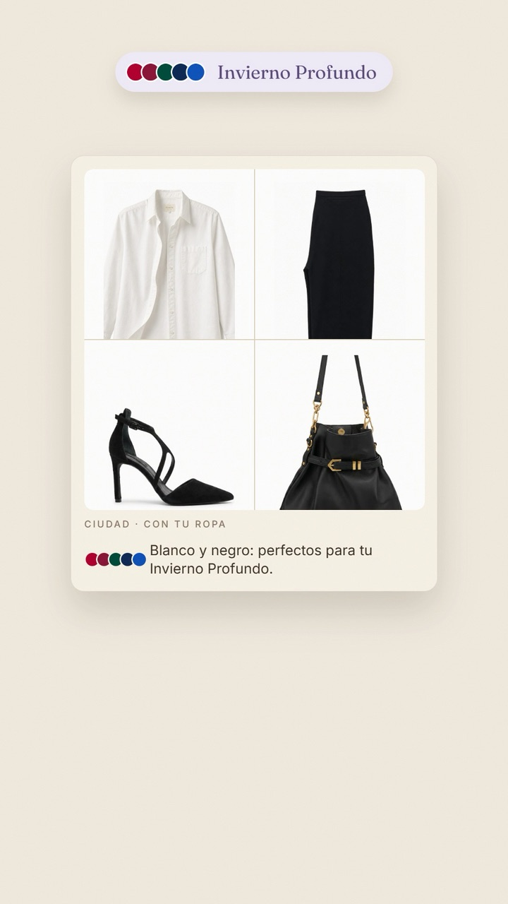
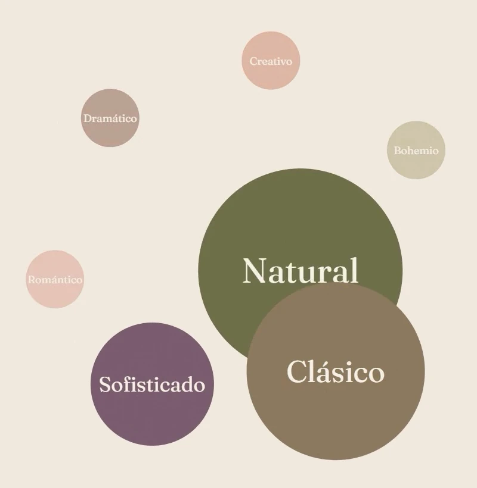
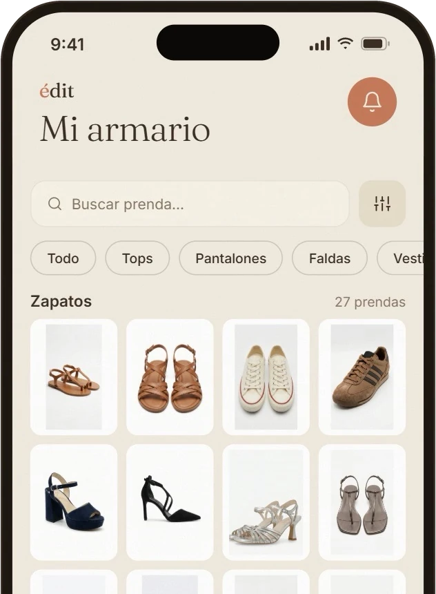
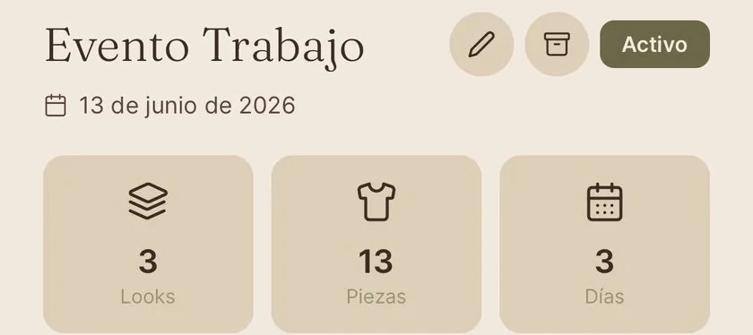
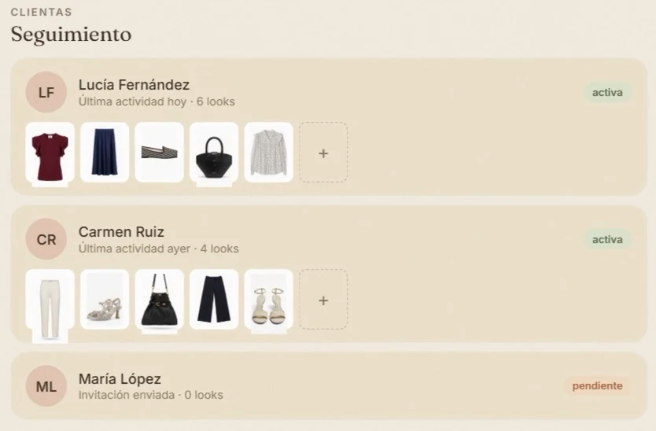
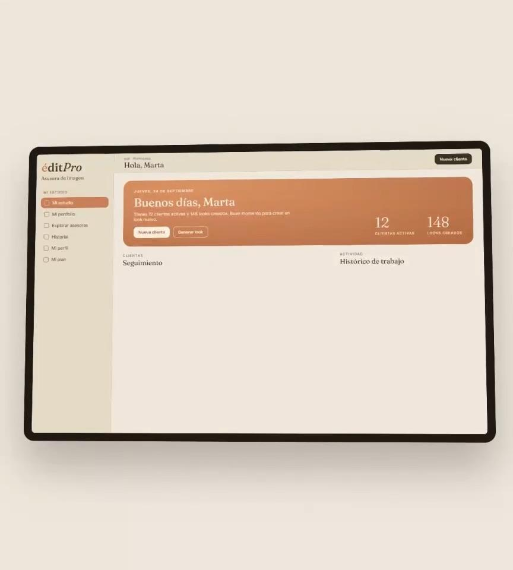

Tu color, primero.
Descubre tu colorimetría entre las 12 estaciones. Tus looks la tienen en cuenta.

Sube una foto y édit te prueba looks hechos con tu propia ropa. Antes de ponértelos.

Tu armario no necesita estar lleno.
Necesita tener sentido.
Descubre tu colorimetría entre las 12 estaciones. Tus looks la tienen en cuenta.

Un test corto descubre tu arquetipo. Y tus looks salen de ahí.

Todo tu armario en el móvil, ordenado y a mano.

Organiza tus planes con los looks de cada día y la maleta.

Una asesora de imagen profesional ve tu armario real y te envía propuestas dentro de la app.

Para asesoras de imagen, estilistas y personal shoppers. Tus clientas, sus armarios y tus looks, en un sitio.
